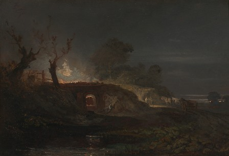

Alcune delle (tante) cose che mi piacciono sono la letteratura, l'arte e il mondo del periodo romantico inglese.
Mi piace figurarmi l'atmosfera gotica dei fanali a gas di una Londra immersa in quella parola appena nata... smog...
Vedo montagne di carbone di Cardiff che riscaldano, affumicano, muovono tutta l'Inghilterra e tutta la sua prorompente steam revolution.
Mi compiaccio dell'efficienza di Sua Maestà, che fa recapitare una lettera scritta con la penna d'oca nel tempo di una email di adesso.
E gioisco, sempre con la fantasia s'intende, nel contemplare i chimici laboratori della Royal Society, con quella miriade di bottigliette smerigliate ottocentesche.
Questo spiega perchè ho particolarmente apprezzato la finezza realizzativa, nei particolari e nei dialoghi, del film "Turner", biografia di quell'originale pittore precursore dell'impressionismo che fu Joseph Mallord William Turner.
In una delle scene iniziali del film si entra pure in un godibile negozio di venditore di pigmenti (potrebbe essere la sezione "reagenti" del laboratorio di Bunsen...), dove, parlando di colori, protagonista è una cascata di giallissimo cromato di piombo trattato senza tanti riguardi, all'antica.
Nel film il nostro Turner sembra la perfetta incarnazione di un Mr.Hyde di Stevenson e questo suo famoso quadro, "La fornace da calce a Coalbrookdale" lo esprime, con la sua quasi demoniaca atmosfera.
